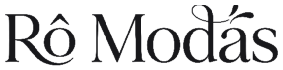

Diretrizes da Marca & Manual Operacional
Manual completo e minimalista para a Rô e equipe da loja física e digital: padronização visual, operação Nuvemshop, TikTok Live Shopping, rotinas do dia a dia e respostas para dúvidas de balcão.
Identidade Visual & Logos
Apresentação da nova logo horizontal e dos ícones oficiais da marca.
Apresentação da tipografia horizontal da Rô Modas aplicada em relevo sobre textura de linho cru na fachada e interior da loja física.





Cores extraídas da identidade visual oficial e boutique. Clique no card para copiar o código HEX:
Perfil do Instagram & Bio
Estrutura oficial baseada no concorrente de referência (Posthaus) para máxima conversão.
Cadastro Completo de Produtos
Procedimento técnico para cadastro de fotos, títulos, IA, preços, variações e frete.
Fazer upload da galeria de fotos respeitando o padrão técnico de proporção. A primeira foto enviada assume a função de Capa na Vitrine da loja.
Se a equipe cadastrar um vestido com foto vertical alta (ex: 4:5) e logo ao lado cadastrar um cropped com foto quadrada em cabide (1:1), os cards da Nuvemshop ficam com alturas desiguais em forma de "degraus". Isso quebra o alinhamento da vitrine, joga os preços e os botões "Comprar" para cima e para baixo e passa uma impressão imediata de amadorismo.
| Formato da Foto | Proporção | Resolução Recomendada | Onde Usar / Regra de Aplicação |
|---|---|---|---|
| Vertical Editorial (Padrão Ouro Moda) | 4:5 ou 3:4 |
1000 x 1250 px (ou 1000 x 1333 px) | Recomendado para toda a Rô Modas. O corpo humano e as roupas são verticais. Valoriza vestidos, macacões e calças sem sobras vazias. |
| Quadrado (Alternativo) | 1:1 |
1000 x 1000 px | Só utilize se 100% das fotos da loja forem quadradas. Nunca misture fotos quadradas com verticais! |
- Regra de Ouro da Vitrine: Todas as fotos de capa da loja devem ter rigorosamente a mesma proporção (1000 x 1250 px).
- Enquadramento da Modelo: Deixar 10% de margem de respiro acima da cabeça e 10% abaixo dos pés. A modelo deve estar centralizada.
- Sequência de Fotos por Peça:
- Foto 1 (Capa): Modelo de frente com boa luz natural, fundo limpo e look completo.
- Foto 2 (Costas): Caimento traseiro da peça, decote e acabamento das costas.
- Foto 3 (Detalhe): Plano fechado da textura do tecido, botões, costura e forro.
- Fotos 4 e 5: As outras opções de cores da mesma roupa.
- Otimização de Peso: Salvar as fotos em formato JPG com 85% de qualidade ou WebP (peso máximo entre 150 KB e 350 KB por foto) para o site carregar instantaneamente no celular da cliente.
O título é o principal indexador do Google e das buscas internas da loja virtual.
Exemplo:
Vestido Midi Canelado com Fenda Lateral
A descrição no e-commerce tem a função do vendedor da loja física: tirar dúvidas, encantar a cliente e comprovar que a peça vai vestir perfeitamente.
- No Painel Nuvemshop: Clicar em Gerar com IA ao lado da caixa de texto, selecionar Tom de Voz Cativante e Tamanho Médio.
- Para Máxima Conversão (ChatGPT, Claude ou Nuvem IA): Utilize o Prompt Oficial abaixo, preenchendo apenas os dados da peça entre colchetes.
Parâmetros de precificação no sistema Nuvemshop:
| Campo | Definição | Exemplo |
|---|---|---|
| Preço Original | Preço regular de venda na loja. | R$ 119,90 |
| Preço Promocional | Preço com desconto. Aparece riscado na vitrine da loja. | R$ 89,90 |
| Preço de Custo | Invisível para os clientes. Calcula a margem líquida no painel. | R$ 42,00 |
Controle de inventário e código identificador único de produto:
- Estoque: Lançar a quantidade física disponível na arara (ex: 2 P, 4 M, 3 G).
- Código SKU: Sem espaços e sem caracteres especiais. Padrão:
VEST-MIDI-01-P. - Código de Barras (EAN): Deixar em branco para fabricação própria; preencher apenas se a peça tiver etiqueta com código de fábrica.
Valores exatos e médios de mercado para o cálculo de frete pelas transportadoras integradas (Nuvem Envio, Correios, Jadlog e Melhor Envio). Considera a roupa dobrada dentro do envelope plástico de segurança inviolável da Rô Modas:
| Categoria de Peça | Peso Médio Real | Dimensões do Pacote (C x L x A) | Embalagem Indicada |
|---|---|---|---|
| Blusas, Regatas, Croppeds e T-Shirts | 0.200 kg (200g) |
26 cm x 20 cm x 3 cm | Envelope de Segurança Pequeno |
| Vestidos Midi, Saias, Camisas e Calças Pantacourt | 0.350 kg (350g) |
30 cm x 22 cm x 4 cm | Envelope de Segurança Médio |
| Vestidos Longos de Festa, Macacões e Blazers Alfaiataria | 0.500 kg (500g) |
32 cm x 24 cm x 5 cm | Envelope Médio ou Caixa Kraft |
| Calças Jeans, Casacos, Tricôs e Conjuntos 2 Peças | 0.700 kg (700g) |
34 cm x 26 cm x 7 cm | Envelope Grande ou Caixa Kraft |
0.350 kg | Dimensões: 30 cm x 22 cm x 4 cm.Por que essa média é ideal? Ela cobre com segurança mais de 90% das peças da loja, respeita os limites mínimos dos Correios/Nuvem Envio e evita prejuízos na emissão da etiqueta.
As duas maiores dúvidas de quem compra moda online são: "qual é o tom real dessa cor?" e "vai servir no meu corpo?". Por isso, a configuração da grade é indispensável:
- Criar a Grade de Cores: Digitar o nome claro da cor (ex: Terracota, Verde Militar, Preto, Off-White).
- Vincular Foto à Cor [10:09]: Clicar no ícone de miniatura de foto ao lado do nome de cada cor e selecionar a imagem exata da peça naquela tonalidade.
- Criar a Grade de Tamanhos: Inserir os tamanhos disponíveis (P, M, G, GG ou 36 ao 44) com o estoque individual de cada um.
- Tabela de Medidas da Peça: Meça a peça esticada em superfície plana com fita métrica: Busto (axila a axila x2), Cintura, Quadril e Comprimento. Insira esses 4 números na descrição.
Procedimento para cadastrar várias peças semelhantes em poucos minutos:
Operação do Ponto de Venda (PDV)
Abertura de caixa, registro de vendas balcão, Pix com desconto e fechamento diário.
Rotina matinal antes do início dos atendimentos no balcão da loja física:
- Acessar no navegador: Ponto de Venda → Ir para o Ponto de Venda.
- Clicar no botão Iniciar Caixa.
- Inserir o valor do dinheiro contado na gaveta (Fundo de Troco inicial recomendado: R$ 200,00).
- Clicar em Salvar. O sistema registra data, horário e operador responsável.
Adicionar produtos ao carrinho utilizando os métodos de busca:
- Digitar o nome ou código SKU na barra de pesquisa (ex:
Vestido Midi). - Ou ler a etiqueta da peça com leitor de código de barras.
- Selecionar o tamanho e a quantidade no seletor de grade.
Registrar os dados da cliente para formação de base de relacionamento e histórico de compras:
- Clicar em Adicionar Cliente.
- Consultar cliente cadastrada por Nome ou CPF, ou clicar em Novo Cliente.
- Preencher Nome Completo, WhatsApp e CPF.
- Inserir endereço de entrega caso a cliente opte por entrega via motoboy ou correios.
Processamento financeiro da venda no caixa:
- Pix com Desconto: O sistema aplica o desconto cadastrado (ex: 5% a 10%) e exibe o valor final líquido.
- Cartão de Crédito: Selecionar o número de parcelas acordado e processar na maquininha física da loja.
- Dinheiro em Espécie: Digitar o valor entregue pela cliente; o sistema calcula o troco exato na tela.
Para clientes que levam peças em condicional para provar em casa ou quando há pendência momentânea de cartão:
- Marcar a opção Registrar como Pagamento Pendente.
- O pedido permanece ativo no sistema e as peças ficam reservadas no estoque sem liberação contábil.
Procedimento de encerramento do expediente comercial:
- Acessar a aba Acompanhamento de Caixa para visualizar totais por modalidade (Dinheiro, Cartão e Pix).
- Clicar em Fechar Caixa e inserir o valor físico apurado na gaveta.
- O PDV gera relatório comparativo entre o saldo esperado e o saldo real para arquivamento financeiro.
Gestão de Pedidos até a DANFE
Da notificação da venda à emissão da nota fiscal, embalagem e despacho.
Notificação imediata no aplicativo Nuvemshop e e-mail da loja a cada compra confirmada:
- Acessar: Vendas → Lista de Vendas.
- Filtrar pedidos com status Pagamento Recebido.
- Conferir itens comprados, tamanhos, cores e modalidade de envio selecionada pela cliente.
Geração do documento fiscal em lote para envio das mercadorias:
- Selecionar os pedidos pagos do dia e clicar em Emitir / Imprimir DANFE Simplificada.
- A DANFE Simplificada é o formato compacto padrão aceito por transportadoras e Correios.
- Para início no MEI ou CPF (Tempo: 03:45), a Nuvemshop disponibiliza a Declaração de Conteúdo Eletrônica com código de barras caso a loja ainda não emita NF-e.
Emissão das etiquetas de transporte integradas (Nuvem Envio / Melhor Envio):
- Clicar em Gerar Etiqueta de Envio nos pedidos selecionados.
- Imprimir em impressora térmica (tamanho 100x150mm) ou em folha A4 comum recortada.
Conferência física e preparação do pacote de moda feminina:
- Retirar as peças da arara física conferindo modelo, tamanho, zíper e costura.
- Envolver no papel de seda e selar com o adesivo circular da marca.
- Adicionar cartão de agradecimento e mimo para a cliente.
- Acondicionar em envelope inviolável ou caixa de papelão kraft.
Normas de etiquetagem exigidas pelas transportadoras:
- Frente do pacote: Colar a Etiqueta de Envio sem dobras sobre os códigos de barras.
- Verso do pacote: Dobrar a DANFE ou declaração de conteúdo com os dados de remetente/destinatário visíveis e inserir no saquinho plástico transparente (canguru) colado no verso.
Otimização logística para entrega diária dos pacotes:
Após a bipagem no ponto de coleta, o status muda automaticamente para Enviado no painel:
- O sistema dispara e-mail com link de rastreio para a cliente.
- Recomendação Prática: Enviar também uma mensagem no WhatsApp da cliente com o código de rastreamento para garantir acompanhamento e estreitar o relacionamento de pós-venda.
TikTok Shop: Como Abrir Live & Selecionar Produtos
Passo a passo prático para a Rô e vendedoras abrirem lives pelo celular, exibirem as peças da loja e fixarem produtos na tela para venda em tempo real.
Utilizar o celular da loja logado no perfil oficial @romodasmatao com a conta comercial aprovada no TikTok Shop Seller Center:
- Abrir o aplicativo do TikTok no smartphone.
- Tocar no botão central + (Criar) na barra inferior.
- No seletor de modos (onde tem Foto, Vídeo, Câmera), deslizar para a direita até a opção LIVE.
- Posicionar o celular em um tripé com iluminação frontal (ring light ou luz natural da boutique).
O título e a capa definem quem vai entrar na transmissão enquanto navega pelo feed:
- Título Recomendado: Use títulos que prometam novidade ou vantagem: "Novidades Rô Modas + Peças com Desconto Exclusivo ao Vivo!" ou "Provador ao Vivo: Vestidos e Tendências da Semana".
- Foto de Capa: Toque no quadrado de capa e selecione uma foto clara da loja ou com modelo vestindo o look principal da transmissão.
Esta é a etapa essencial que conecta a transmissão ao catálogo aprovado do TikTok Shop:
- Na tela de configuração da LIVE, toque no ícone de Produtos / Sacolinha (Shop) no menu lateral ou inferior.
- Toque em Adicionar Produtos (ou Adicionar da Minha Vitrine / Loja).
- O sistema lista todos os produtos já sincronizados e aprovados no catálogo da Rô Modas.
- Marque as peças que estão separadas na arara da live (recomendamos selecionar entre 5 a 15 peças por transmissão para não sobrecarregar).
- Confira a ordem dos produtos para que fiquem alinhados com a sequência que você pretende mostrar.
- Clique em Concluir / Salvar. Os produtos agora estão vinculados à sessão!
Depois de clicar no botão vermelho Transmitir ao Vivo:
- A live começa a rodar para os seguidores e novos espectadores do TikTok.
- Quando você começar a mostrar o Vestido Midi Terracota, toque no ícone de Sacola de Compras na tela da live.
- Encontre o vestido na lista e toque no botão Fixar (Pin).
- O que acontece na tela da cliente: Um card elegante e flutuante com a foto da roupa, preço e o botão "Comprar Agora" fica em destaque no canto inferior da tela. A cliente clica, escolhe o tamanho (P/M/G) e finaliza o pedido em 2 cliques sem sair da live!
- Quando terminar de mostrar essa peça e for para a próxima blusa, toque na sacolinha e clique em Desafixar, fixando em seguida a nova roupa.
Técnicas de Live Commerce para acelerar o fechamento de pedidos:
- Responder Dúvidas de Tamanho na Hora: Fale sobre o tecido, mostre como estica, cite a altura da modelo e as medidas da peça para dar segurança total.
- Ativar Cupom da Live: Se houver cupom ativo configurado no Seller Center, avise o público: "Meninas, quem comprar agora pela sacolinha tem cupom de frete ou 10% de desconto!".
- Gatilho de Estoque Limitado: Avise quantas peças restam (ex: "Meninas, desse conjunto só temos 2 peças no tamanho M, clica na sacolinha para garantir").
Após encerrar a transmissão pelo botão de desligar no canto superior:
Gestão de Trocas, Devoluções & Logística Reversa
Procedimento de acolhimento, geração de etiqueta reversa, vistoria física da peça na loja de Matão e emissão de vale-compras ou estorno.
Uma política de troca simples e sem atrito transforma uma cliente em dúvida em compradora fiel para a vida toda:
- Prazo de Arrependimento (Código de Defesa do Consumidor): A cliente tem até 7 dias corridos após o recebimento do pacote para solicitar devolução ou troca sem custos.
- Prazo para Defeito de Fabricação: Até 30 dias corridos.
- Roteiro Cordial no WhatsApp: "Olá, [Nome da Cliente]! Que pena que a peça não ficou perfeita como você esperava, mas não se preocupe! A 1ª troca na Rô Modas é super simples e rápida. Vamos gerar o código para você nos reenviar sem nenhum custo."
Geração do frete reverso sem que a cliente precise pagar nada nos Correios:
- Acessar no painel: Vendas → Selecionar o Pedido da Cliente.
- Clicar na opção Logística Reversa / Gerar Código de Postagem Reversa (via Nuvem Envio ou Melhor Envio).
- O sistema gera um código numérico de postagem (ex:
987654321). - Enviar o código no WhatsApp da cliente com a instrução: "Basta colocar a roupa na mesma embalagem ou em um envelope seguro, colar a nota fiscal dobrada por fora e levar a qualquer agência dos Correios informando este código."
Ao receber a encomenda de volta na boutique da Av. Quinze de Novembro, a vendedora realiza a conferência obrigatória antes de liberar o reembolso ou troca:
- Tags e Etiquetas: A tag de linho/papel e a etiqueta interna de tecido devem estar afixadas e sem violação.
- Odores: Peça livre de odores (perfume, suor, cigarro ou cheiro de amaciante).
- Sem Marcas de Uso: Sem manchas de base/maquiagem na gola, sem puxões de fio e com zíper/botões funcionando perfeitamente.
- Peça não lavada: Tecido sem marcas de lavagem doméstica.
Finalização do procedimento mantendo o faturamento da loja:
- Opção A — Vale-Compras no Site (Preferencial): Criar no painel um cupom de desconto com o valor exato pago pela peça (ex: cupom
TROCA-[NOME]). A cliente entra no site e escolhe outro tamanho ou modelo, aproveitando o saldo imediatamente. - Opção B — Troca Presencial: Se a cliente morar na região de Matão, ela pode vir diretamente ao balcão da boutique e provar outras opções. A vendedora dá a baixa no PDV.
- Opção C — Estorno Financeiro: Caso a cliente queira o dinheiro de volta (dentro dos 7 dias), clicar em Cancelar / Estornar Pedido no painel Nuvemshop. O valor é devolvido automaticamente na fatura do cartão ou na conta Pix da cliente.
Sincronização de Estoque Físico x Loja Online
A regra de ouro operacional da Rô Modas para evitar furo de estoque e nunca vender duas vezes a mesma peça do cabide.
O maior risco de uma loja física com e-commerce integrado é uma cliente da rua provar e comprar a mesma peça única que acabou de ser paga no site:
Nenhuma mercadoria pode sair da loja física sem ser bipada no PDV:
- Como o Nuvem PDV é 100% sincronizado com a loja virtual, no exato segundo em que a venda presencial é concluída, o sistema desconta aquela unidade do estoque online.
- Se a vendedora vender no dinheiro e "deixar para lançar depois", o site continuará exibindo a peça como disponível, gerando cancelamento constrangedor se alguém comprar online.
Quando clientes conhecidas levam várias peças para experimentar em casa:
- Lançar os itens no Nuvem PDV selecionando o nome da cliente e marcar a opção "Pagamento Pendente".
- Isso congela o estoque das peças no site para que ninguém compre enquanto estão com a cliente.
- Quando a cliente devolver as que não serviram, basta cancelar os itens devolvidos no pedido pendente; o estoque volta a ficar visível no site automaticamente.
Rotina preventiva de 20 minutos toda segunda-feira de manhã:
- Acessar Produtos → Lista de Produtos e filtrar por produtos com 1 unidade em estoque.
- Dar uma passada de olhos rápida na arara física para confirmar se aquela peça única realmente está no cabide.
- Se houver divergência, ajustar a quantidade no painel na hora com 1 clique.
Organização de Categorias, Menus & Vitrine na Nuvemshop
Como estruturar a árvore de categorias, ordenar a página inicial e destacar os produtos certos para guiar a cliente até a compra.
Analisamos a árvore de categorias cadastrada no painel da Nuvemshop (Vestidos, Blusas, Feminino, Plus Size, Meninas, Meninos, Pijamas, Marcas, Novidades, Promoções):
1. Feminino vs. Vestidos e Blusas: Deixar Feminino no mesmo nível que Vestidos e Blusas confunde a cliente (ela não sabe se clica em Feminino ou em Vestidos). O ideal é transformar Feminino na Categoria-Mãe, ou manter as peças femininas diretas no menu principal.
2. Meninas e Meninos no Menu: Ter dois botões separados (Meninas e Meninos) polui o menu do celular. Agrupe ambos dentro de uma única categoria principal chamada Infantil.
3. Posição de Novidades e Promoções: Novidades deve ser sempre o 1º item do menu (para quem visita com frequência) e Promoções deve ser o último item em destaque.
| Categoria Principal (Menu) | Subcategorias Vinculadas | Organização no Painel Nuvemshop |
|---|---|---|
| 1. ✦ Novidades | Lançamentos da Semana, Alto Verão | 1ª posição no menu para gerar compras por impulso. |
| 2. Vestidos | Vestidos Midi, Vestidos Curtos, Vestidos Longos | Carro-chefe da boutique (maior tíquete e margem). |
| 3. Blusas & Croppeds | Croppeds, T-Shirts, Camisas, Regatas | Peças de alto giro e compra casada com calças. |
| 4. Plus Size | Vestidos Plus, Conjuntos Plus, Macacões | Destaque especial para atender o público com carinho e opções completas. |
| 5. Pijamas & Conforto | Pijamas Femininos, Homewear | Excelente tíquete para presentes e compras afetivas. |
| 6. Infantil | ↳ Meninas ↳ Meninos |
Agrupamento inteligente: crie a categoria Infantil e arraste Meninas e Meninos para dentro dela como subcategorias! |
| 7. Marcas | Marcas Parceiras / Confecção Própria | Menu de busca para quem procura etiquetas específicas. |
| 8. Promoções (Sale) | Últimas Peças, Bazar | Última posição no menu, destacada em cor ou negrito para queima de estoque. |
Passo a passo no painel administrativo:
- Acessar no menu esquerdo: Produtos → Categorias.
- Clicar no botão azul Criar Nova Categoria.
- Digitar o nome (ex: Vestidos) e salvar.
- Para criar uma subcategoria (ex: Midi): criar a categoria e arrastá-la levemente para a direita embaixo de Vestidos. Ela se torna subcategoria automaticamente.
- Ao cadastrar cada roupa, basta marcar a caixinha correspondente (uma peça pode estar em Vestidos e também em Novidades).
Como posicionar as roupas para vender mais:
- No painel, acessar: Produtos → Lista de Produtos → Ordenar Produtos.
- Arraste os modelos campeões de venda para o topo da lista.
- Marque a opção "Destacar na Página Inicial" nos 8 a 12 vestidos e conjuntos mais impactantes da semana.
Guia de Dúvidas Frequentes da Rô e Vendedoras
Respostas diretas e descomplicadas para as perguntas mais comuns do dia a dia da loja física e e-commerce.
Na loja física da Av. Quinze de Novembro, a cliente vai até o provador e veste a roupa. Na internet, a fita métrica é o provador da cliente.
Quando uma loja não coloca medidas:
- Mais de 60% das mulheres desistem de comprar por medo de que a peça fique apertada ou larga;
- A taxa de trocas e devoluções salta para mais de 35%, gerando custos de frete e desgaste para a loja.
Se a cliente clica na bolinha "Verde Militar" e a foto na tela continua mostrando o vestido "Terracota", o cérebro da cliente entra em confusão: ela não sabe se o verde é musgo, se é claro ou escuro.
Ao vincular cada foto à sua cor (conforme ensinado no Processo 01 aos 10:09), quando a cliente toca na cor, a foto muda na hora. Isso passa uma sensação de loja grande, sofisticada e profissional.
- Peso:
0.350 kg(350 gramas); - Comprimento:
30 cm; - Largura:
22 cm; - Altura:
4 cm.
- 1. Assim que a venda cair com status "Retirada na Loja Física", pegue a peça imediatamente na arara e coloque na sacola boutique com papel de seda e laço;
- 2. Mande mensagem no WhatsApp: "Olá, [Nome]! Seu look já está prontinho e embalado aqui na boutique te esperando! Pode passar quando quiser na Av. Quinze de Novembro, 2516.";
- 3. Quando ela chegar, entregue com carinho e convide-a para olhar as novidades da arara (muitas clientes compram uma segunda peça no ato!);
- 4. No painel Nuvemshop, abra o pedido e clique em "Marcar como Entregue".
- 1. Verifique se há o tamanho G disponível no estoque da arara;
- 2. Se houver, troque a peça física na cesta de expedição pelo tamanho G;
- 3. No painel Nuvemshop, abra a venda, clique em Mais Opções → Editar Itens do Pedido e substitua o tamanho M pelo G (isso garante que o controle de estoque fique 100% correto);
- 4. Imprima a DANFE e a etiqueta normalmente e confirme a troca pelo WhatsApp da cliente: "Tudo certinho, [Nome]! Já alteramos seu pedido para o tamanho G com muito carinho. Segue o rastreio!".
- Foto 1 (Capa): Modelo com a peça no corpo, de frente, em boa luz;
- Foto 2 (Costas): Mostrando o caimento traseiro, decote das costas ou fechamento do zíper;
- Foto 3 (Plano Detalhe): Foto aproximada do tecido, costura, botões ou textura;
- Fotos 4 e 5: As outras opções de cores da mesma peça no corpo ou no cabide.